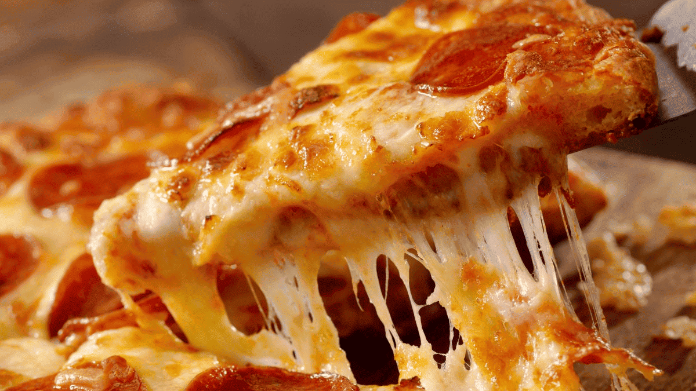

La Pizza Más Innovadora del Año
En una pequeña pizzería de Roma, un chef ha creado la pizza más innovadora de la temporada. Con una mezcla única de ingredientes locales y sabores exóticos, esta pizza ha logrado sorprender tanto a los locales como a los turistas. La base es una combinación de masa tradicional italiana y un toque secreto de especias traídas de Asia, que le dan un sabor único. Lo que realmente hace especial a esta pizza no es solo su masa, sino sus ingredientes. En lugar de la típica mozzarella, el chef ha optado por una mezcla de quesos artesanales italianos y una capa de salsa de trufa negra, lo que le da una profundidad de sabor única. Además, se le añaden ingredientes frescos como rúcula, jamón de Parma y tomates secos, creando una experiencia que va más allá de lo esperado.
Esta pizza ha recibido elogios de críticos gastronómicos y se ha convertido en una de las principales atracciones turísticas en Roma. El chef, conocido por su pasión por experimentar con nuevos sabores, asegura que esta creación es solo el comienzo de una nueva era en la pizza gourmet. Los comensales han señalado que lo más sorprendente de esta pizza es la combinación de texturas y sabores. La base crujiente, la suavidad de los quesos y el toque terroso de la trufa negra crean una sinfonía en cada bocado. Algunos incluso han declarado que es una de las mejores pizzas que han probado en su vida. Si alguna vez te encuentras en Roma, no puedes dejar de visitar la pizzería de la que todos hablan. Con su propuesta innovadora, este lugar está estableciendo nuevas normas para lo que una pizza puede ser. ¡No te lo pierdas!
